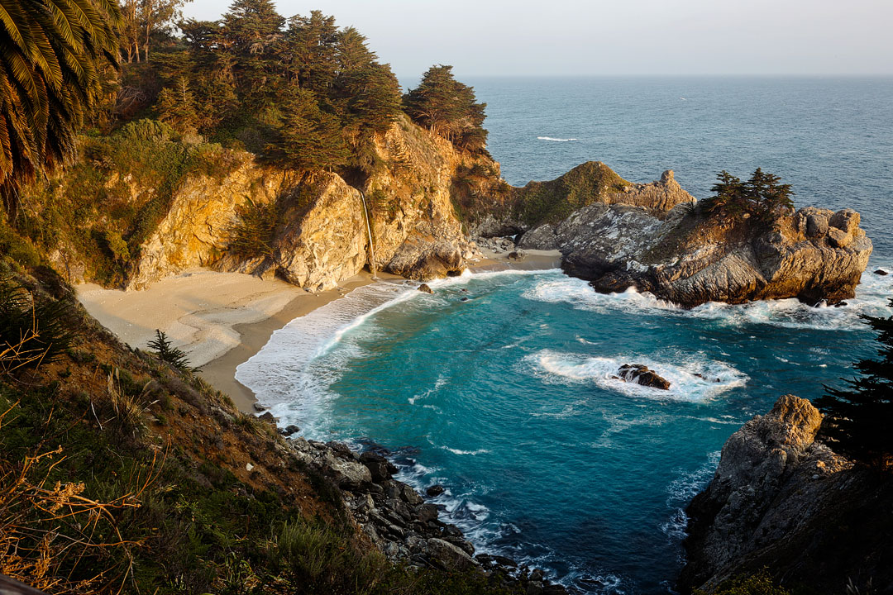
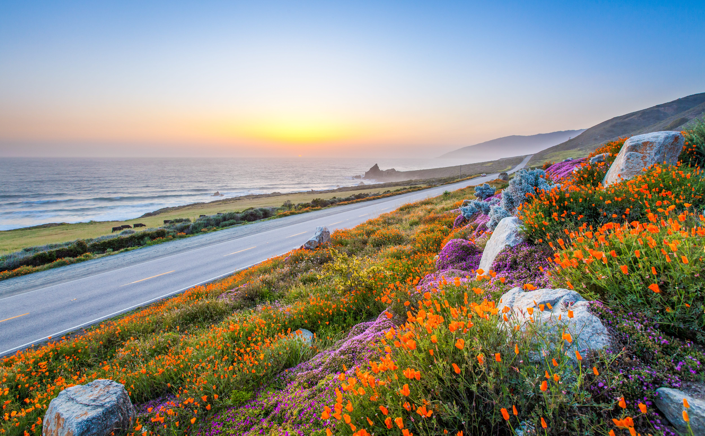
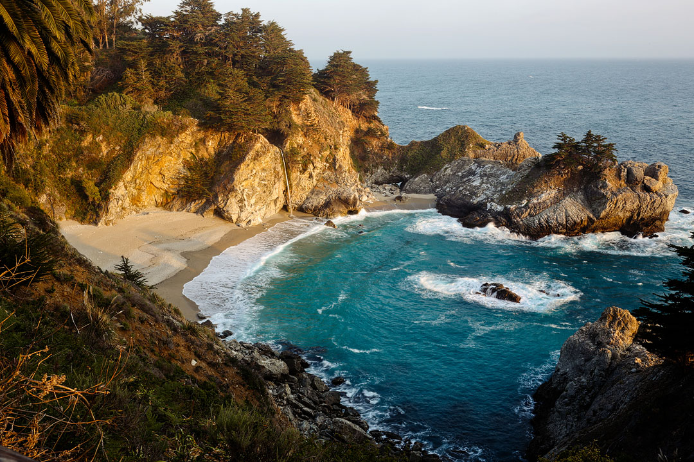
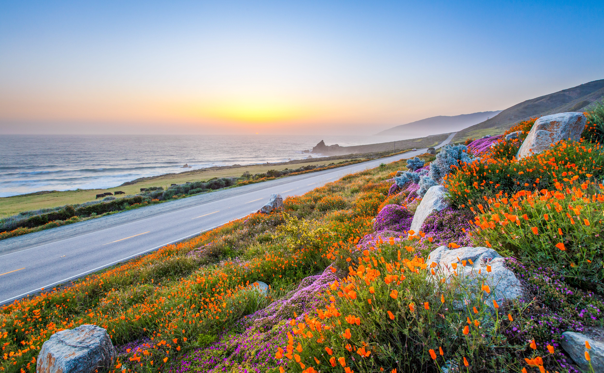

Traveling Out West: Yellowstone, Lake Tahoe, Big Sur, Jackson Hole, and Joshua Tree
About Yellowstone

Yellowstone National Park, a marvel of natural beauty, beckons travelers with its geysers, including the famous Old Faithful, and a vibrant display of wildlife in their natural habitat.
Exploring Yellowstone offers an unforgettable journey through vast landscapes, from the mesmerizing Grand Prismatic Spring to the rugged peaks of the Absaroka Range, providing a perfect blend of adventure and tranquility.
Photo Gallery


Fun Things to Do!
- Witness Geothermal Wonders: Explore the park's renowned geothermal areas like the Old Faithful Geyser, the Grand Prismatic Spring, and the Mud Volcano to witness nature's incredible thermal activity.
- Wildlife Watching: Take a guided tour or venture on your own to Hayden Valley or Lamar Valley, known as the "Serengeti of North America," to observe wildlife like bison, elk, wolves, and grizzly bears in their natural environment.
- Hiking and Nature Trails: Embark on hikes across diverse landscapes, from easy strolls around Yellowstone Lake to challenging treks in the backcountry, to experience the park's stunning waterfalls, lush forests, and scenic vistas.
About Lake Tahoe

Lake Tahoe, a jewel of natural splendor, invites visitors with its crystal-clear waters and scenic mountain backdrop, including the picturesque Sierra Nevada range. This stunning lake is renowned for both its summer and winter activities, offering a unique blend of relaxation and adventure.
Discovering Lake Tahoe provides an extraordinary experience through diverse landscapes, from the shimmering expanse of the lake to the surrounding peaks and forests, offering a perfect combination of serene beauty and outdoor excitement.
Photo Gallery


Fun Things to Do!
- Explore Crystal Clear Waters: Discover the stunning clarity of Lake Tahoe by visiting iconic spots like Emerald Bay or Sand Harbor. Kayak, paddleboard, or simply relax by the shore to appreciate the lake's mesmerizing blue waters.
- Wildlife Watching: Embark on a journey around Lake Tahoe's diverse habitats, where you can spot local wildlife such as black bears, coyotes, and a variety of bird species. Popular areas for wildlife viewing include the Tahoe Meadows and the Taylor Creek Visitor Center.
- Hiking and Nature Trails: Experience the natural beauty of Lake Tahoe with hikes for all skill levels. Walk the easy trails at Eagle Falls or challenge yourself with the hike to Mount Tallac, enjoying breathtaking views of the lake and surrounding Sierra Nevada mountains.
About Big Sur
Big Sur, a marvel of California's coastline, captivates visitors with its dramatic cliffs and the vast expanse of the Pacific Ocean. This breathtaking stretch along Highway 1 is celebrated for its stunning ocean views and rugged natural beauty. The region's unique charm lies in its combination of misty forests, towering mountains, and the serenity of the seaside.
Exploring Big Sur offers an unparalleled experience of wild and unspoiled landscapes. From the majestic redwoods and rolling coastal hills to the spectacular sunsets over the ocean, this area provides a perfect blend of tranquil retreat and natural wonder, making it an ideal destination for both relaxation and adventure seekers.
Photo Gallery
 



Fun Things to Do!
- Scenic Coastal Views: Immerse yourself in the stunning scenery of Big Sur by driving along the famous Highway 1. Stop at viewpoints like McWay Falls or Bixby Bridge for unforgettable ocean vistas and photo opportunities.
- Wildlife Watching: Venture into the natural habitats of Big Sur to observe local wildlife. You might spot sea otters, seals, and various bird species along the coastline. The Point Lobos State Natural Reserve is a particularly great spot for wildlife enthusiasts.
- Hiking and Nature Trails: Explore the diverse landscapes of Big Sur through its extensive trail network. From the easy walks in Julia Pfeiffer Burns State Park to the more challenging hikes in the Ventana Wilderness, there's something for every level of hiker to enjoy the region's lush forests and coastal views.
About Jackson Hole

Nestled in the heart of the Teton Range, Jackson Hole stands as a beacon of adventure and natural beauty. This idyllic valley in Wyoming is famed for its rugged landscapes, wildlife, and a rich tapestry of cultural history.
Photo Gallery


Fun Things to Do!
- Mountain Panoramas: Discover the breathtaking beauty of Jackson Hole by traversing through the Teton Range. Iconic spots like Oxbow Bend and Jenny Lake offer panoramic mountain views and memorable photography settings.
- Wildlife Encounters: Experience Jackson Hole's rich wildlife. Keep an eye out for bison, elk, and moose in their natural habitat. The National Elk Refuge is an ideal place for viewing these majestic creatures.
- Adventurous Trails: Jackson Hole's diverse terrain invites hikers of all abilities. Whether it's a gentle stroll around Phelps Lake or tackling the challenging trails in Grand Teton National Park, the area promises an immersive experience in nature's splendor.
About Joshua Tree
Joshua Tree National Park, located in southeastern California, is renowned for its fascinating geology and unique desert ecosystem, which includes the iconic Joshua trees.
This park, attracting visitors worldwide, offers a surreal landscape of rugged rock formations and stark desert vistas, perfect for hiking, rock climbing, and stargazing.
Photo Gallery
Fun Things to Do!
- Rock Climbing: Joshua Tree National Park is a climber's paradise, featuring thousands of climbing routes across its famous granite formations, suitable for all skill levels.
- Stargazing: With its clear, dark skies away from city lights, the park offers exceptional opportunities for stargazing and astrophotography, especially during new moon phases.
- Hiking: The park boasts a variety of hiking trails that meander through its unique desert landscape, allowing visitors to explore the distinctive Joshua trees, cacti, and diverse wildlife.